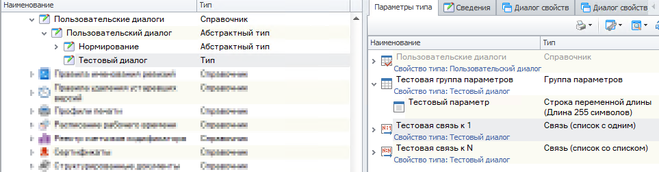
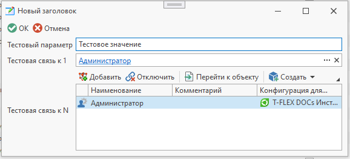

Пользовательский диалог |
Пользовательские диалоги T-FLEX DOCs позволяют создавать пользовательские диалоговые окна, которые могут содержать связи с различными справочниками либо использоваться для ввода значений, не связанных с данными какого-либо справочника.
Особенность пользовательских диалогов заключается в том, что для каждого пользователя в системе создается только один диалог конкретного типа.
Метод ПолучитьПользовательскийДиалог() при первом обращении создает для пользователя диалог указанного типа, а при последующих вызовах возвращает этот созданный диалог.
Пользовательский диалог

Код
C#
using TFlex.DOCs.Model.Macros; using TFlex.DOCs.Model.Macros.ObjectModel; public class Macro : MacroProvider { public Macro(MacroContext context) : base(context) { } public override void Run() { // Получаем пользовательский диалог по наименованию типа ПользовательскийДиалог пользовательскийДиалог = ПолучитьПользовательскийДиалог("Тестовый диалог", вернутьПустойДиалог: true); // Пользовательский диалог является объектом справочника, поэтому при каждом сохранении диалога значения параметров и объекты связей фиксируются. // Если необходимо сбрасывать значения при каждом открытии по аналогии с диалогом ввода, то для аргумента 'вернутьПустойДиалог' нужно задать значение 'true' if (пользовательскийДиалог is null) // Если пользовательский диалог не был найден, выходим return; // Редактируем параметры пользовательского диалога пользовательскийДиалог.Изменить(); пользовательскийДиалог.Заголовок = "Новый заголовок"; // Устанавливаем новый заголовок пользовательского диалога пользовательскийДиалог.ПоказыватьПодтверждениеПриОтмене = false; // Скрываем подтверждение действия при отмене как в диалоге ввода пользовательскийДиалог["Тестовый параметр"] = "Тестовое значение"; // Устанавливаем значение параметра пользовательскийДиалог.Подключить("Тестовая связь к n", ТекущийПользователь); // Подключаем объект по связи к N пользовательскийДиалог.СвязанныйОбъект["Тестовая связь к 1"] = ТекущийПользователь; // Задаем объект по связи к 1 // Пользовательский диалог можно сохранить также, как и любой другой объект справочника: //пользовательскийДиалог.Сохранить(); // Можно отобразить диалог свойств пользовательского диалога, завершить в нем редактирование и сохранить: if (пользовательскийДиалог.ПоказатьДиалог()) // Если изменения в диалоге сохранены (нажата кнопка "Ок"), то выполняем необходимую логику { // Получаем данные из диалога: string тестовыйПараметр = пользовательскийДиалог["Тестовый параметр"]; Объекты объекты = пользовательскийДиалог.СвязанныеОбъекты["Тестовая связь к N"]; Объект объект = пользовательскийДиалог.СвязанныйОбъект["Тестовая связь к 1"]; } } }
Результат отображения диалога
